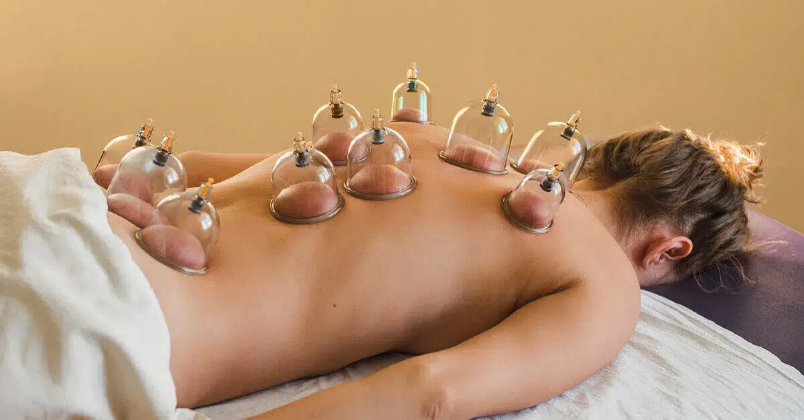

Nuestros Servicios
Masoterapia
La masoterapia es una forma de terapia manual que utiliza técnicas de manipulación de los tejidos blandos del cuerpo, como la piel, los músculos y los tendones, para aliviar el dolor, reducir la tensión muscular, mejorar la circulación sanguínea y promover la relajación.
Fisioterapia
La fisioterapia es una disciplina terapéutica que utiliza técnicas manuales, ejercicio y equipamiento especializado para tratar lesiones musculoesqueléticas, mejorar la movilidad y promover la recuperación física.
Magnetoterapia
La magnetoterapia es una forma de tratamiento terapéutico que utiliza campos magnéticos para aliviar el dolor y promover la curación en diversas condiciones médicas.

Aplicación de Ventosas
La aplicación de ventosas es una técnica terapéutica que implica colocar copas de vidrio, plástico o silicona sobre la piel para crear un vacío, lo que ayuda a mejorar la circulación sanguínea, aliviar la tensión muscular y promover la relajación.
Punción Seca Técnicas Manuales
La punción seca manual es una técnica terapéutica utilizada por fisioterapeutas y kinesiólogos que implica la inserción de una aguja fina en puntos específicos de los músculos o tejidos blandos para aliviar el dolor, reducir la tensión muscular y mejorar la función. Esta técnica se realiza sin la aplicación de ningún medicamento o sustancia, y puede ayudar a liberar puntos gatillo y mejorar la movilidad y el rendimiento muscular.

Kinesioterapia
La kinesioterapia es un método terapéutico que se enfoca en la recuperación física a través del movimiento y el ejercicio. Los kinesioterapeutas utilizan técnicas específicas para rehabilitar lesiones musculoesqueléticas, restaurar la funcionalidad perdida y mejorar la movilidad del cuerpo. Con una combinación de ejercicios terapéuticos, terapia manual y otras modalidades de tratamiento, la kinesioterapia ayuda a los pacientes a recuperar su calidad de vida y a alcanzar sus metas de recuperación física.
Obras Sociales